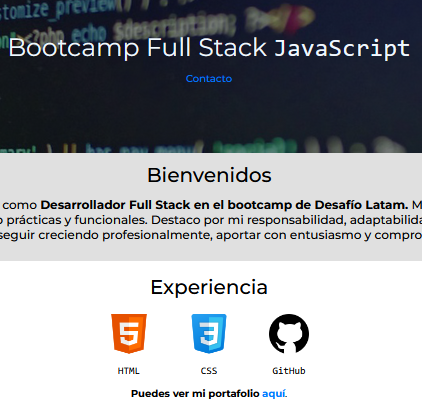

Mi Portafolio: Cómo lo creé y qué aprendí
Publicado: Julio 2025
Desarrollar mi currículum en formato web fue una experiencia enriquecedora y estratégica. Más allá de presentar mi trayectoria, fue una oportunidad para aplicar de forma práctica mis conocimientos en HTML y CSS. Desde el diseño hasta la estructura del contenido, cada elemento fue pensado para reflejar tanto mi perfil profesional como mis habilidades técnicas.
Reflexión
Trabajar en este proyecto me permitió entender la importancia del diseño limpio, la jerarquía visual y la adaptabilidad del contenido. Implementé una estructura semántica clara, cuidando la presentación en distintos dispositivos gracias al uso de media queries. También integré una barra de navegación funcional, secciones bien organizadas y un footer profesional. Todo esto gestionado bajo control de versiones con Git y desplegado mediante GitHub Pages para garantizar acceso público y transparente.
Competencias Aplicadas
-
Maquetación responsiva con CSS: Adaptación del contenido a
distintos dispositivos utilizando
flexboxy media queries. - Semántica en HTML: Uso de etiquetas adecuadas para mejorar la accesibilidad, organización y comprensión del contenido por los navegadores y buscadores.
- Flujo de trabajo profesional: Versionado de código con Git, manejo de ramas y publicación del sitio con GitHub Pages.